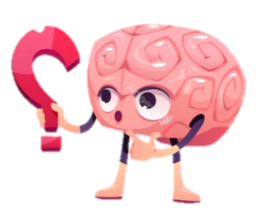

¿Sabías que...?
Los estudios demuestran que las personas con animales de compañía suelen estar más sanas y felices que aquellas que no los tienen, además, sabemos lo maravilloso que es volver a casa al final de un duro día y escuchar el ronroneo de satisfacción de una adorable bola de pelo; es por ello que no tenemos duda de que los gatos son grandes mascotas, pero también una gran responsabilidad y un compromiso de por vida.
Artículos destacados
Diversión para gatos
juego de gatos
Antes de alarmarte o angustiarse lo primero debes entender es que el juego favorito de los gatos es “jugar a cazar” por lo que se empujan con las patas, se muerden y se abalanzan uno sobre el otro. Adicionalmente, a los gatos les gusta explorar los límites, por ejemplo: muerden a su compañero un poco, si este...
Higiene para gatos
Elegir el arenero ideal para mi gato
Debe ser proporcional al tamaño del gato, es decir, si el mirringo puede dar una vuelta completa dentro del recipiente, entrar y salir de un solo salto, ¡es el arenero perfecto! Pero si tienes más de un gato y deben compartirlo, lo ideal es que sea un poco más grande. Debes tener en cuenta el tamaño de ambos gatos y la edad, por ejemplo, un pequeño...
Alimentación para gatos
Top 5 alimentos tóxicos para gatos
Algunos alimentos de consumo humano causan en los mininos problemas gastrointestinales y, en el peor de los casos, intoxicaciones y la muerte de la mascota.
- Leche y productos lácteos
- Uvas y pasas
- Cervezas, vinos, energizantes y café
Mi gato agresivo
¿Por qué mi gato tira cosas al suelo?
En ocasiones nos hemos dado cuenta que los felinos, suelen tener una gatonalidad (personalidad) no muy agradable. Así que ellos no van a querer esquivar nada, lo primero que hacen es tirar algo que les estorbe y nos los deje seguir su camino, sin importar que algún objeto haya caído.